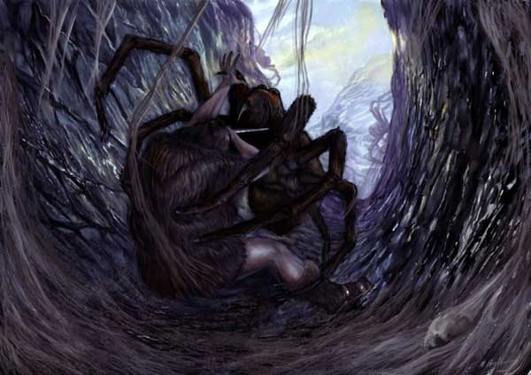

|
 |
Ambiente/Habitat | Caverne, Colline, Montagne |
| Frequenza | Non Comune | |
| Organizzazione | Gruppo | |
| Periodo di Attività | Quasiasi | |
| Dieta | Carnivora | |
| Intelligenza | Animal (1) | |
| Punti Combattimento | Nessuno | |
| Tesoro | Vedi Sotto | |
| Allineamento Dominante | Neutrale | |
| Numero di Apparizione | 1d6+2 | |
| Classe Armatura | 4 [10 base, 3 corazza, 1 destrezza] | |
| Movimento | 8 esagoni /ragnatele 6 esagoni | |
| Dadi Vita | 3 (+5 punti ferita) | |
| Thac0 / Valore di Carica | 17 / Valore di Carica 14 | |
| Numero di Attacchi | Morso | |
| Danni | 1d6+1 (taglio) | |
| Poteri Offensivi | Istinto Predatorio; Veleno; Sputare Ragnatela; |
|
| Poteri Difensivi | Robustezza Superiore (+5 punti ferita); Cospargere Ragnatele; |
|
| Poteri Generici | Nessuna | |
| Vulnerabilità | Nessuna | |
| Resistenza alla Magia | Nessuna | |
| Sensi | Infravisione (21 metri), Sensi Superiori | |
| Dimensioni | Medium (1,65 m. di diametro) | |
| Morale | Steady (11) | |
| Valore in Punti Esperienza | 286 |
|
TIRI SALVEZZA DELLA CREATURA |
|||||||
| CORAGGIO | ENERGIA VITALE | MAGIA | MALATTIA | MENTE | RIFLESSI | ROBUSTEZZA | VELENO |
| 0 | 0 | 0 | 0 | 0 | 0 | 0 | +5% |
| 49 | 55 | 62 | 47 | 60 | 54 | 53 | 44 |
Descrizione
I Ragni Giganti dei Cunicoli sono ragni giganti predatori vagano nelle caverne e nei tunnel uscendo solo raramente dagli stessi in caso di mancanza di cibo. Il loro carapace è di varie tonalità di marrone scuro con peluria nera che spunta visibilmente dalle giunture e sulle zampe.
Combat
I Ragni Giganti dei Cunicoli sono cacciatori di zona. Girano nei cunicoli in cerca di prede ed a volte escono di poco dalle caverne per attaccare le loro vittime. I Ragni Giganti dei Cunicoli cospargono le pareti dei tunnel da loro occupati con ragnatele (vedi sotto il relativo potere difensivo ed i suoi effetti). Una volta percepita la presenza di creature nel cunicolo questi ragni si gettano sulle prede per ucciderle, spesso, però, i ragni aspettano che le creature entrino bene nel sistema di caverne da questi occupati prima di attaccare, ciò per scongiurare il pericolo di fuga.
ISTINTO PREDATORIO (Moderate Special Ability): La creatura possiede un forte istinto predatorio, per tale motivo costei riceve un bonus costante di +1 alla Thac0 con i suoi attacchi.
VELENO [MORSO] (Moderate Special Ability): Se la creatura colpisce con il suo morso la stessa inietterà nel corpo della vittima il seguente veleno: Tipologia Insinuativo, Onset 3 round, Effetti 4/8, Delay 2, Tiro Salvezza senza modificatori, Assuefazione nessuna.
SPUTARE RAGNATELA (Superior Special Ability): queste creature possono sputare su chi si trovi in corpo a corpo con loro una ragnatela appiccicosa al fine di bloccare la propria vittima impedendone i movimenti. Si tratta di un'azione di attacco sostitutiva del morso alla quale si applica un fattore iniziativa pari a +2. La vittima deve superare un tiro salvezza su riflessi per evitare la ragnatela altrimenti ne rimarrà invischiato. Chi resta invischiato nella ragnatela non potrà spostarsi dalla zona in cui si trova e si considererà a tutti gli effetti incapacitato. Le creature di taglia Huge o superiore sono immuni agli effetti di questa ragnatela. Chi si trova invischiato nella ragnatela può cercare di liberarsi dalla stessa con un'azione complessa dalla durata di un round. Ogni round in cui la vittima cerca di liberarsi provocherà alla ragnatela danni pari ai numeri per il quale è riuscito in una prova di forza (con un tiro pari o superiore alla propria forza, quindi, non si provocherà alcun danno alla ragnatela). Le creature di taglia Large ottengono un bonus di +4 alla prova di forza. La ragnatela può subire 30 punti danno. I danni sono effettuati alla fine del round per cui la creatura sarà libera di agire solo nel round successivo alla distruzione della ragnatela. Terze creature possono, se munite di armi da taglio, aiutare a rompere la ragnatela. Costoro dovranno effettuare per ogni attacco una prova di destrezza (con –1 di penalità se usano armi medium e -3 se usano armi large). Se la prova a successo l’attacco (senza necessità di alcun tiro per colpire) danneggerà solo la ragnatela, se invece fallisce la ragnatela e la creatura bloccata si divideranno i danni (la ragnatela subirà però eventuali danni per eccesso). Una volta effettuato lo spruzzo la creatura non può utilizzare questa abilità speciale nuovamente nei quattro round di combattimento immediatamente successivi.
ROBUSTEZZA
SUPERIORE
(Typical Ability):
Il fisico della creatura è estremamente robusto. Ciò conferisce alla stessa una
robustezza superiore
che gli garantisce 5 punti ferita
supplementari.
COSPARGERE RAGNATELE
(Moderate Special
Ability):
I Ragni Giganti dei
Cunicoli cospargono le pareti dei tunnel da loro occupati con uno strato di
ragnatela ciò rende le pareti del cunicolo appiccicaticce e viscose in modo tale
da rallentare l'avanzata delle creature che vi si inoltrano. Anche interi
settori di caverna possono essere ricoperti di ragnatele in questo modo.
Tutte le creature che non
sappiano muoversi specificatamente sulle ragnatele possono muoversi nei
cunicoli solo alla metà del loro fattore movimento. Le ragnatele che cospargono
le pareti dei cunicoli, inoltre, fungono da formidabile sistema di allarme. Le
vibrazioni delle creature che entrano nel cunicolo, infatti, sono percepite dai
ragni anche a grande distanza (entro 50 metri) purché costoro siano a contatto
con stesse ragnatele.
Habitat/Society
I Ragni Giganti dei Cunicoli sono ragni giganti che vivono in dungeon, tunnel od altri complessi cavernosi. Questi ragni sono cacciatori stanziali che si stanziano in grossi complessi sotterranei cospargendo le pareti della loro zona di ragnatele. Costoro lasciano la sicurezza dei loro cunicoli sono in caso di mancanza di prede sufficienti a soddisfare la propria dieta.
Ecology
I Ragni Giganti dei Cunicoli sono predatori pericolosi. Cacciano creature di taglia media e di taglia larga lasciando passare creature più grosse o pericolose. Questi ragni producono uova dal colore bianco lucido che nascondono al centro dei loro cunicoli. Vi è il 25% di possibilità di trovare 2d3 uova durante qualsiasi periodo dell'anno. Queste uova che pesano 2 lbs. hanno un valore di mercato di circa 35 g.p. l'una.
Tesoro
I Ragni Giganti dei Cunicoli conservano i cadaveri delle loro vittime e gli oggetti che attirano la loro attenzione deponendoli al centro della loro sistema di cunicoli dove tra l'altro depongono le uova. Per tale motivo si consulti la seguente tabella per determinare oggetti eventualmente presenti nel cunicolo dei ragni:
| % di ritrovamento | TIPOLOGIA | Ammontare ritrovato |
| 15% | Gemme | 1d3 |
| 50% | Monete d'oro | 2d20+10 |
| 50% | Monete d'argento | 4d20+20 |
| 50% | Monete di rame | 2d100+50 |
| 10% | Oggetto magico | 1 1d10: (1-9) common (10) rare |
| 33% | Arma | 1 |
| 25% | Armatura | 1 |